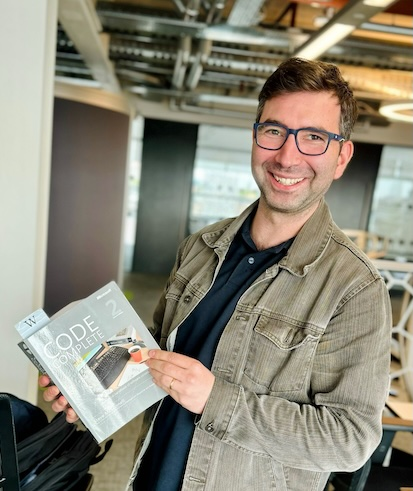

About

My name is Paolo Di Pasquale and this is my personal website. It's for writing and capturing lots of different stuff including, but not limited to my work as a web engineer. My domain name is itanglo.io, it's a play on words that refers to my mixed heritage. My late father was Italian and my mother is English. I was born in Italy and moved over to England with my family when I was 8 years old. This makes me an Italian Anglo, or "Itanglo". The top level domain of .io has the fortunate coincidence that "io" means "me" in Italian.